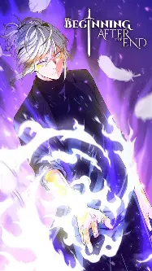

Manhwa
Manhwa é o termo usado para se referir a quadrinhos sul-coreanos. Assim como os mangas japoneses, os manhwas são uma forma popular de entretenimento visual que combina arte e narrativa.
| Nome | Autor | Gênero |
|---|---|---|
| The Beginning After the End | Lee Chan-ho | Fantasy, Action |
| Kingdom | Lee Jang-hoon | Historical, Action |
| Após uma morte misteriosa, Rei Grey renasce como Arthur Leywin no continente mágico de Dicathen. Embora ele comece em sua segunda vida como um bebê, sua sabedoria da vida anterior permanece. Ele começa a dominar a magia e a forjar seu próprio caminho com o passar dos anos, buscando corrigir os erros de sua vida passada… |

